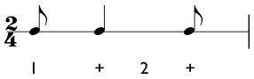
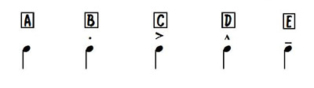

To play jazz, you have to know the basics of how to play it. There are many elements when it comes to jazz such as syncopation and anticipation, articulation and improvisation. Those will be the 5 things I will be teaching you today starting with syncopating.
Jazz musicians like to emphasize the notes that they play on the upbeats and tend to emphasize the notes that occur when your foot is in the air. This is syncopation: accenting upbeats. Try tapping your foot to a steady beat and say "tuba". Every time your foot is in the air say "bah" and when your foot touches the ground say "tu". Basically, play continuous notes with syncopation so it would sound like "tu-bah-tu-bah-tu-bah". Without syncopation, the music would sound monotonous and boring. Anticipation is literally anticipating notes, we're going to continue using tuba. When you have something like an eighth rest before a note, again, use tuba but without saying "tu" so your articulation is " -bah- - bah- - bah"
Articulation is another key factor of making your music not sound boring. For example, if you play your music like "tah-tah-tah-tah-tah", even with syncopation, it sounds sad. There are many ways to articulate but for jazz, there are four main ways of articulation, "dit", "dot","doo" and "bah". Dit is played when there is a staccato mark and is played the shortest out of the three of them. Dot is played when a note has a little hat on top of it like an upside-down V. Doo's are played normally when there is no symbol or whe there is a line on top of the note and Bah's are played when there is an accent symbol.
Improvisation may seem difficult, and it is. To be a really good improviser, you need practice (a lot of practice), patience and a good understanding of rhythms. When you first start improvising, choose a key, preferably the one you are most comfortable playing, and take Mixolydian of that scale (the third note) and start jamming on that note. Play jazzy rhythms on that note and on that note only, mix up some of the articulations I just talked about too and make sure you try all sorts of styles, such as fast rhythms, slow, jolly, sad etc. After you get that hang of one note, add another note preferably the Ionian of that scale and again start jamming. Then add another and another until you feel comfortable playing on that scale. Now do that for the other 11 keys... This is why improvisation is difficult, many songs call for different key signatures and you have to maintain the practice you had on each scale.